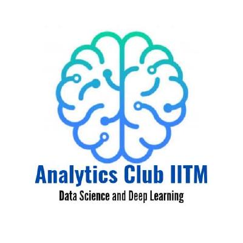

Analytics Club

Who are we?
The Analytics Club, CFI is a group of enthusiastic students working in various fields of Deep Learning and Data Science. We apply Deep Learning and Data Science to solve various problems pertaining to Natural Language Processing, Computer Vision, Reinforcement Learning, and many more!
Club Projects for the Year 2021-22
This year we bring to you a new variety of Projects in the fields of Reinforcement Learning, Natural Language Processing and Computer Vision!! Here are the Projects we have planned for the year:
Even though these projects might look a little hard at first, we will be started their development right from the basics so we encourage you all to try applying for the project of your interest even if you feel like you might not have the skills needed to make the project!!
NEW!
Apart from these projects, this year we have decided to take a new initiative as well to ensure that a greater number of you could be involved with the club through the year.
We will be launching Short term and quick outcome mini projects through the year and the selections for the same will be based on interaction and involvement in the club sessions. We have 4 such projects planned and we will convey the details about each mini project right before we start conducting sessions, so stay tuned!!